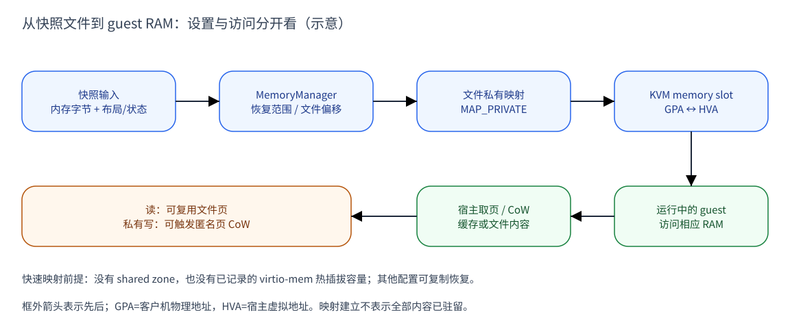
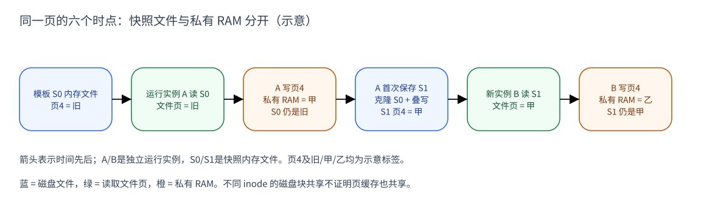

CubeSandbox 如何恢复快照内存：磁盘映射、缺页与运行时 CoW
内存恢复包含两个层次：先重建“客户机地址对应哪段宿主内存”的关系，再为 这些地址提供保存时的字节。CubeSandbox 满足快速恢复条件时，用快照文件的 私有映射提供 RAM；不满足时，先创建内存，再把文件字节复制进去。
全文沿用一组明确对象：S0是初始模板快照，A是从S0启动的运行实例；S1是A 后来保存的完整快照，B是从S1新建的独立运行实例。图中的“旧、甲、乙”只是 同一页在三个时点的示意内容，不是应用数据或真实内存转储。
本文先建立文件、虚拟地址、物理页的关系，再沿映射与取页流程讲解恢复。 随后用 A、B 的读写说明运行时 CoW（写时复制），并解释它与快照文件的磁盘块 CoW 为何是两套机制。普通 Linux/KVM RAM 是主线，复制恢复另述。
| 版本 | 固定源码 | 大致时间（commit） |
|---|---|---|
| v0.5.1 | a164417f4972 | 2026-07 |
| v0.6.0 | 8721dd151971 | 2026-07 |
| v0.7.1（主要讲解基线） | 31d911e430fd | 2026-09 |
日期采用 commit 月份，不是发布日期。本文核对这三个版本的相关实现，未做运行实验。
系统层辅助源码固定为 Linux v6.6； 不是本机宿主版本或已验证的部署配置。
1. 内存恢复的基础：内容、布局与映射
VMM 是宿主中管理 VM 的用户态程序。客户机看到自己的物理地址 GPA，而 VMM 用宿主虚拟地址 HVA 访问为客户机准备的内存。KVM 是 Linux 的虚拟化内核接口， 它通过 memory slot 记录这些范围的对应关系。磁盘上的内存文件则提供字节， 不是客户机地址空间本身。E1、E3
文件映射把“文件的某段偏移”接到“一段 HVA”，KVM slot 再把这段 HVA 接到 GPA。建立映射并不要求文件所有内容立即进入物理 RAM；真正访问时，宿主可从 页缓存取得已驻留的页，也可能需要读文件。由此才能区分恢复设置和运行时取页。
私有映射 MAP_PRIVATE 的关键语义是写入隔离：运行实例可以修改映射中的
内容，但修改不回写源文件。需要时，宿主为该实例准备匿名私有页。这使同一份
稳定的模板文件能够作为多个实例的恢复输入。E2、E4
页缓存为文件内容提供宿主 RAM 中的驻留副本，进程的页表则决定某个虚拟地址 当前使用哪个页。文件私有映射最初可以引用文件页，私有化后改用匿名页。 因此，原文件、文件页缓存和运行实例的私有页可以同时存在，修改其中的私有页 不等于改写另外两者。E4
这也解释了“延迟取页”的含义：延后的是部分内容进入或关联物理 RAM 的工作， 不是省略保存布局，也不是允许恢复输入缺少字节。VMM 仍须先建立正确的地址 关系；访问某页时，才能从对应文件位置获得正确内容。
保存内容与地址布局必须一起恢复
一个可恢复 VM 的保存状态包含内存字节、内存布局、CPU/设备等状态和配置。
Cubelet 从 snapshot catalog 解析内存对象的名字和类型，再交给恢复程序；
VMM 的 MemorySnapshotFile 优先使用 memory_vol_url，否则读取保存目录里的
memory-ranges。E1
代码中的选择发生在 MemorySnapshotFile::from_snapshot_url：有外部内存
对象地址就解析该地址，没有才把 memory-ranges 接到保存目录后面。
MemoryManager::new_from_snapshot 读取内存布局状态，按快速路径检查的结果
决定传入文件FD还是走稍后的逐范围复制。
名字中有 volume 不意味着它一定是块设备。在 XFS/reflink backend 中，它 可以是宿主的普通文件；外部内存对象 URL 与保存配置/状态的目录 URL 也不同。 恢复过程据保存的 GPA（客户机物理地址）范围、memory-slot 和文件偏移重建 RAM，而不是猜一个 文件名或沿历史 snapshot 目录回放。
例如两段 guest RAM 中间有 MMIO 地址洞，文件中仍可把两段字节顺序保存。
restore_memory_regions_and_zones 查找匹配的 GPA/长度，累计前面范围的长度
作为文件偏移。因此 GPA、宿主地址和镜像文件偏移是三个不同坐标。
例如保存了两段各8 KiB的RAM，第二段在镜像中从偏移8 KiB开始，即使它的GPA
前面隔着设备地址洞也一样。只有保存记录中的GPA和长度匹配恢复区域时，代码
才把该文件及累计偏移交给 create_ram_region；布局信息是恢复输入的一部分。
2. 正常流程：建立文件映射，再取得实际页面
下面把前述模型放回代码：MemoryManager 选择 RAM backing，KVM 登记地址范围， 客户机开始访问后再通过宿主内存管理取得具体页。三个阶段各有职责，不能把 其中某个函数返回理解为整个 VM 已经恢复完成。
MemoryManager 先判断没有 shared memory zone，也没有已记录的 virtio-mem 热插拔容量。
满足这两个条件才把保存文件以只读 FD 打开，给匹配区域构造
MAP_PRIVATE + PROT_READ/PROT_WRITE 的映射；只读 FD 与私有可写映射并不矛盾，
因为这些写入不会回写源文件。E2
接下来注册 KVM memory slot：把每段 guest GPA、长度和 VMM 的 HVA（宿主
虚拟地址）一起交给 set_user_memory_region。这是 KVM 的内存区域登记接口，
建立地址对应关系，对应 Linux 的 KVM_SET_USER_MEMORY_REGION ioctl；不是把整个文件复制进 KVM，
也没有把这份快照变成 guest 的 virtio 块盘。E3
看图的两层：上行是恢复时的设置，下行是映射建立后的访问。guest 首次访问 某段 RAM 时，宿主可以复用已驻留的文件页；冷缓存下则需把文件内容读入内存。 真实页的到达时间取决于缺页、缓存和预先填充等条件。
这里并不是客户机程序直接调用宿主的缺页处理。Linux 6.6 的 KVM MMU 路径先
将 GFN（GPA 所在的页号）按 memory slot 换成 HVA，再通过 GUP（获取用户内存页）
取 PFN。写访问需要时带 FOLL_WRITE，进入宿主私有映射的写缺页/CoW；读与写
是否能直接复用已映射页，还受当前页表权限影响。E4

图 1：普通文件私有映射的机制示意，Linux 页缓存/缺页为辅助机制；不是 “mmap 返回后文件全部驻留”的证明。证据：E2、E3、E4。 框外箭头表示设置和访问的先后；slot框中的GPA↔HVA表示范围登记关系，并非 复制方向。下行从右向左读：guest访问相应RAM，宿主取页机制提供文件页或私有页。
3. 运行时 CoW：共享读取与私有写入
CoW 把“可以复用已有内容”和“修改必须隔离”结合起来。它不要求在恢复之初 复制所有文件页，也不允许一个实例通过私有写入改动其他实例的恢复基线。 这里的共享对象是符合条件的文件页，私有化的对象是实例使用的 RAM 页。
同一模板启动两个实例时会发生什么
如果 A 和另一个 Sandbox 分别映射同一个稳定的 S0 文件，在没有额外私有化
等条件下，它们可以读到相同的文件页缓存；两者仍有独立地址空间和页表。
这不要求用 fork() 创建子进程，更不表示两台 VM 的所有 RAM 始终共用。
这里的“同一个文件”很关键：S0、S1 是不同 inode，即使 XFS 让它们共享磁盘 extent，也不能据此断言它们共享同一份页缓存。文件系统节省的磁盘块与 VM 节省的 RAM 要分别分析，不能互相换算。
当 A 写页4，Linux 的文件私有映射 CoW 路径为它准备匿名副本，保留旧字节再 应用修改。A 的对应地址转而使用私有页；S0 文件不因此改变。普通读缺页与 这种写 CoW 缺页是不同处理路径；同一页之后反复写，也不意味着每次都复制整页。E4
现在把 A 保存为 S1：保存程序克隆配套基线，再把 A 的选中 RAM 字节写入 S1 文件。B 从 S1 恢复，读到的是这个保存时刻的完整内存内容。A 后续再写、 B 自己写、S1 已保存的文件内容，三者各有自己的生命周期。

图 2：单页示例，假设普通文件私有映射、未请求额外 prefault。A 写“甲”后， S0 仍是“旧”；S1 保存“甲”，B 再写“乙”也不会改写 S1。不是实测内容。 证据：E2、E4、E5。 这里的“页4”从1开始计数，只是示意中的同一页；箭头表示时间先后。蓝色框是 保存到文件的内容，绿色框是读取阶段，橙色框是某个运行实例的私有RAM修改。
4. 应用原理：保存窗口不改变运行实例的内存归属
CoW 解决写入隔离，SoftDirty 解决保存窗口，二者不互相替代。 为什么清 SoftDirty 后旧匿名页仍在？因为清 pagemap 的软脏标记 bit 55 不会 把 A 的私有页归还 S0；A 从 S0 恢复后产生的匿名页集合仍在。所以下次 Incremental 会包含早前的私有页，已布防 SoftDirty 则只覆盖本轮带标记的那些页。
B 从 S1 创建的是新 MemoryManager。它以 S1 为恢复基线，从未布防开始， 不能继承 A 的“上次清位到现在”窗口。也不能拿 A 自 S0 累积的 anon 集合当成 B 的脏页集合：这些状态属于各自运行实例。E5
磁盘文件克隆也不会复制 VMM 的页表或运行中私有 RAM。FICLONE 克隆文件内容 映射，真正的 VM 状态保存与加载还由 VMM 完成。这是“从 Snapshot 创建 Sandbox”与“复制一个进程当前内存”之间需要拆开的部分。
5. 两种变体：预先取页与复制恢复
前面的例子以按需访问文件私有映射为前提。实际恢复还可以提前填充页面， 或者完全不把快照文件用作 RAM backing。这两种变化发生在不同阶段，也会 改变读者对“启动时是否复制”和“未写页是否共享”的判断。
VMM 请求 prefault 时会加 MAP_POPULATE。它不只是“先读取文件”：Linux 6.6
填充私有可写 VMA 时会带 FOLL_WRITE，以写缺页打破 CoW。因此可能在业务尚未
写入前就准备匿名副本，减少后续按需共享，增大 anon 保存集合。E6
不满足快速路径条件时，VMM 不传入快照文件作为 RAM 的私有 backing，而是
先按配置创建内存，再由 fill_saved_regions 按保存范围逐段复制字节。
关闭 fast path 的是 shared zone 或已记录的 virtio-mem 热插拔容量；hugepage
本身不是这个检查中的第三个条件。进入复制路径后，shared/memfd、hugepage
等配置再决定新建 RAM 的映射方式，不能套用“所有未写页都共享 S0”的图解。
在这两个路径中，完整内存镜像和正确布局仍是前提。打开文件成功、mmap 成功、 KVM slot 注册成功、CPU/设备恢复成功、guest 应用可用，都属于不同完成点。 本文不将某个系统调用成功当作 VM 恢复或应用就绪的验证。
6. 版本范围与进一步阅读
v0.5.1/v0.6.0/v0.7.1 的快速路径检查、RAM 映射与复制恢复函数体在本次核查中 保持一致。v0.6.0 改的是保存扫描的页尺度；v0.7.1 改了 probe、基线 backend 和 Pause/Resume 相关对象管理，不能把恢复底层函数不变理解成整条恢复业务不变。
v0.7.1 的 XFS 模板/FromSnap/同节点 Pause 恢复可解析原快照文件并私有映射， 没有必需的 Sandbox 内存文件克隆；S3 同节点 Pause 恢复和跨节点导入有自己的 私有存储卷路径。本文没有验证跨节点、共享内存、64 KiB、hugepage 或 guest/DMA 写入组合的结果，也没有测量启动时间、RAM 共享比例或跨版本恢复兼容。
进一步阅读：脏页怎样识别与管理、 XFS 文件块何时 CoW、 SoftDirty 版本演进。
想先读基础接口，可看 KVM内存槽与dirty log； 文件块共享的具体结构见 XFS extent与FICLONE。
源码证据
E1 · 输入文件与布局（local fact）
v0.7.1
E2 · 快速路径 / slow copy（local fact，三版独立核对）
new_from_snapshot 与两条件检查
RAM flags
E3 · KVM 地址注册（local fact，限定 KVM 后端）
E4 · Linux 文件读缺页与私有写 CoW（固定辅助源码；单页流程是 inference）
Linux v6.6
- KVM GFN → HVA → PFN
- GUP 写访问与 FOLL_WRITE
- ARM64 KVM 调用点
- x86 KVM 调用点
- do_read_fault
- do_cow_fault 分配与复制匿名页。
- 页缓存 address_space 的 inode 与 i_pages。
- filemap_fault 按文件 mapping 查找/创建 folio。
- mmap 接口说明仅作标准语义参考。
E5 · 基线克隆、覆盖写与实例窗口（local fact）
v0.7.1
E6 · prefault 不是只读预热（local source fact）
VMM MAP_POPULATE 见 E2；Linux v6.6
它解释可能提前打破 CoW 的条件，不提供真实 Sandbox 内存占用或性能数据。